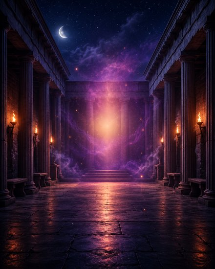
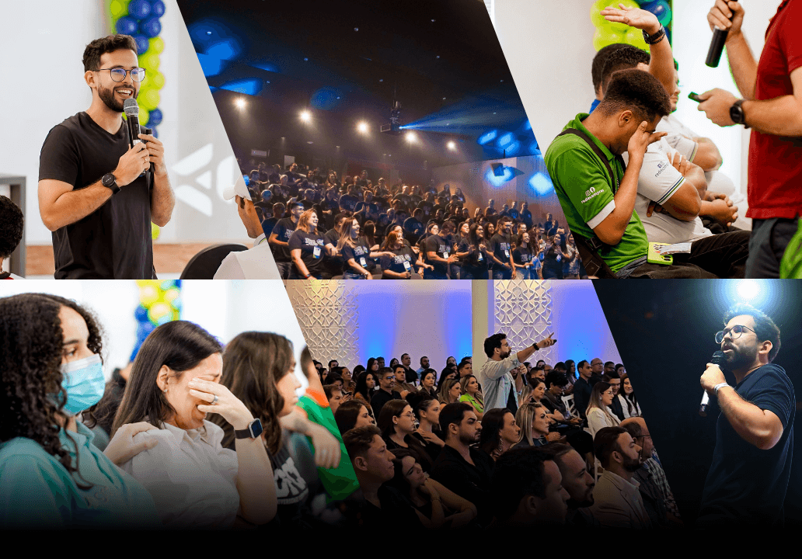
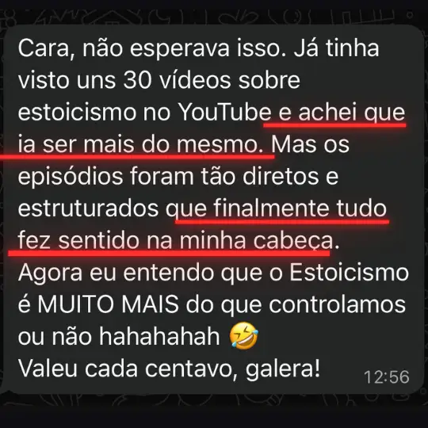

Roteiro Estoico
De R$ 47,00
As transcrições completas dos 3 episódios com reflexões práticas e os melhores momentos de cada aula — organizados para você reler, sublinhar e aplicar quando precisar.
Está viciado em "acumular conteúdo", confundindo quantidade com qualidade.
Quer aprender materiais densos sozinho, em formatos que te desmotivam rapidamente.
Não sabe identificar o Estoicismo superficial demais (beira autoajuda), ou o abstrato demais (ninguém aplica na vida).
Não segue um método estruturado. Outros dominam em 1 dia o que você não dominou em 1 ano.
E é justamente por isso que você precisa conhecer os episódios de
Um Dia Com Marco Aurélio!
Assista aos 3 episódios de 20min.
(aprenda mais rápido e melhor).
Você conhecerá as 3 Disciplinas Estoicas que separam quem fala sobre filosofia
de
quem vive ela.
O que você vai aprender:
No Amanhecer, você vai descobrir a Disciplina do Pensamento: como sair do automático, recuperar a presença e começar o dia sem ser dominado pela ansiedade ou pelos pensamentos que te paralisam.
No Meio-dia, vamos falar da Disciplina da Ação: a arte de agir com propósito, tomar decisões difíceis e fazer o certo com consistência, mesmo quando ninguém está olhando.
E no Anoitecer, você vai conhecer a Disciplina do Desejo: como soltar o controle, aceitar o que não depende de você e acordar com esperança, mesmo depois de um dia difícil.
Os 3 episódios já vão transformar a forma como você entende o estoicismo.
Mas eu quero ir além...
Por isso, além da série, preparei 4 bônus criados para uma única finalidade:
As transcrições completas dos 3 episódios com reflexões práticas e os melhores momentos de cada aula — organizados para você reler, sublinhar e aplicar quando precisar.
Uma aula exclusiva sobre as 4 situações que mais desequilibram a sua mente — e o que Marco Aurélio faria em cada uma delas: Conflito no trabalho. Relacionamento em crise. Ansiedade antes de uma decisão. Frustração com o que não depende de você.
Todo dia de manhã, você recebe um áudio direto do Rafa no seu WhatsApp. Não é notificação de grupo. Não é conteúdo genérico. É um pensamento estoico aplicado ao seu dia — antes de qualquer coisa te distrair. 12 meses de acesso inclusos.

Masterclasses ao vivo e exclusivas para alunos sobre filosofia e estoicismo. Sem data fixa. Sem quantidade mínima. Se tornou aluno, pode participar. Você entra para a série e fica para muito mais do que imagina.
Valor total: R$ 297,00
Após o cronômetro zerar, o valor vai para R$ 97,00
Hoje você garante tudo isso por apenas:
de R$ 297,00 por:
Você tem 7 dias para pedir seu dinheiro de volta.
Sem perguntas. Sem complicação.

Filósofo (com graduação e pós em Filosofia), Professor e Escritor, Rafa é reconhecido como a Nova Voz da Filosofia no Brasil e suas palestras já impactaram mais de 70.000 pessoas.
Se você já perdeu horas no YouTube, livros pela metade e podcasts que esquece rapidamente, Rafa Barbosa defende que o problema não é você.
O problema é que ninguém te ensinou estoicismo da forma certa. Por isso, te convida para uma experiência de 60 minutos ao lado dele e Marco Aurélio. Finalmente você verá o estoicismo de maneira estruturada, com início, meio e fim.
Aceita esse convite?
Todo mundo fala que estoicismo muda vidas.
Mas ninguém mostra o que fazer quando ele não funciona pra
você.
Você já comprou livros. Já assistiu vídeos. Já salvou dezenas de posts.
Mas se ainda não mudou, é porque
tá faltando a peça certa.
A real?
Quem entende estoicismo de verdade não é quem consome mais.
É quem tem o plano certo.
E o plano tá aqui.
Um Dia com Marco Aurélio.
Agora é contigo.
Vai continuar só acumulando... ou vai viver esse dia?
Rafael M. acabou de adquirir a série!
de São Paulo, SP
